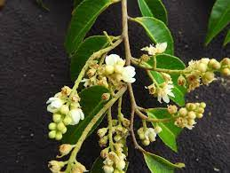
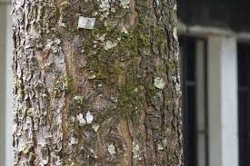
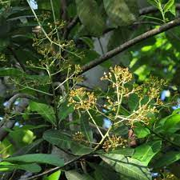
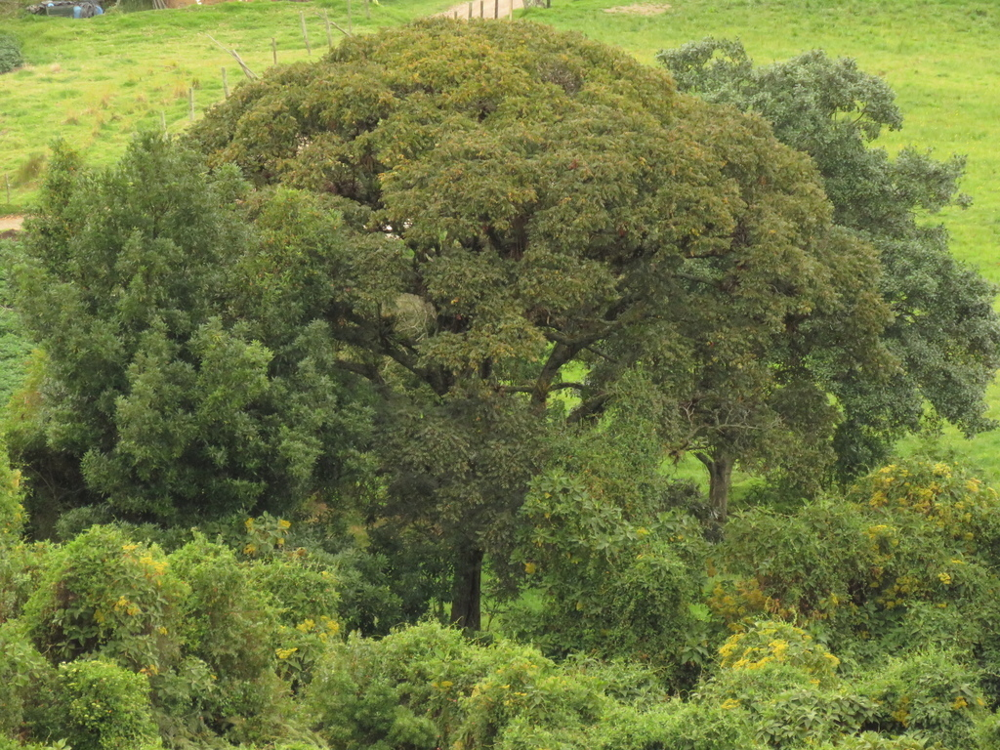
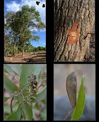
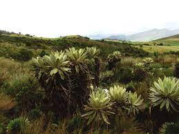
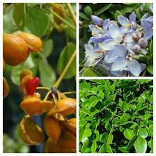
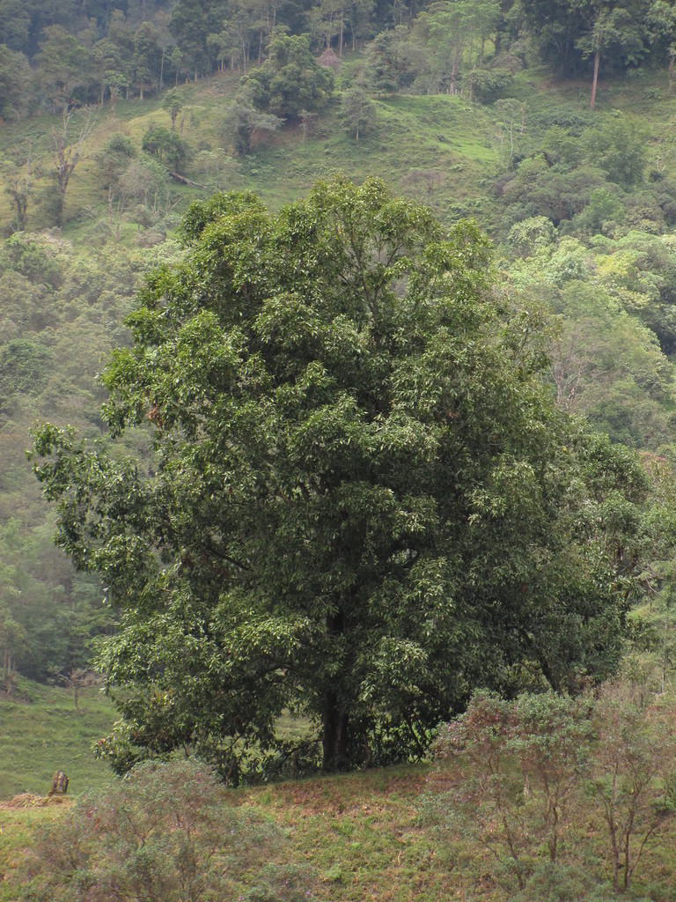
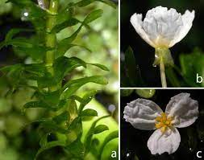
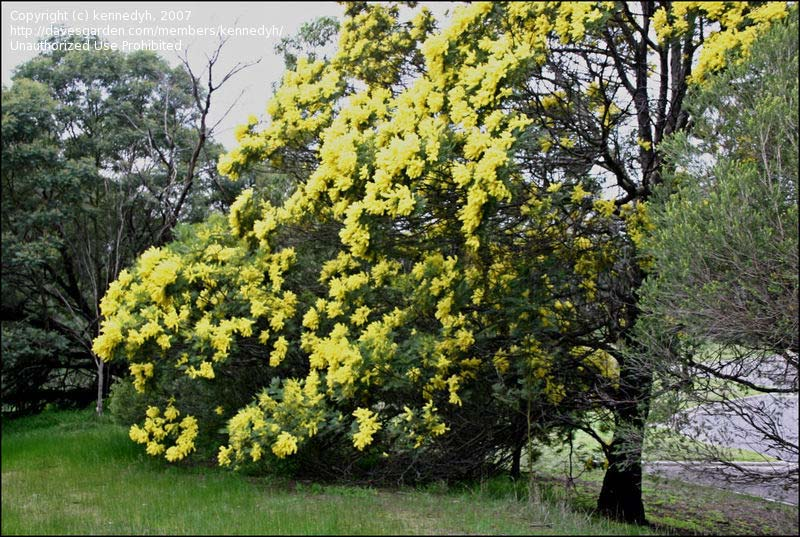

Biodiversidad
Boyacá
Cundinamarca
Contactanos
Mapa
Fauna
Flora
CUNDINAMARCA
Especies amenazadas
Comino crespo

Abarco

Caoba

Caracolí

Cedro

Cumula

Frailejones

Guayacan
Palma de cera
Palma real o de vino
Palama sabal
Pino colombiano

Roble
Arbol de Caparrapi
Especies invasoras

Elodena
Helecho de agua
Retamo espinoso
Retamo Liso

Acacia
Buchón de agua
Ojo de poeta
Helecho marranero
Junco Enea